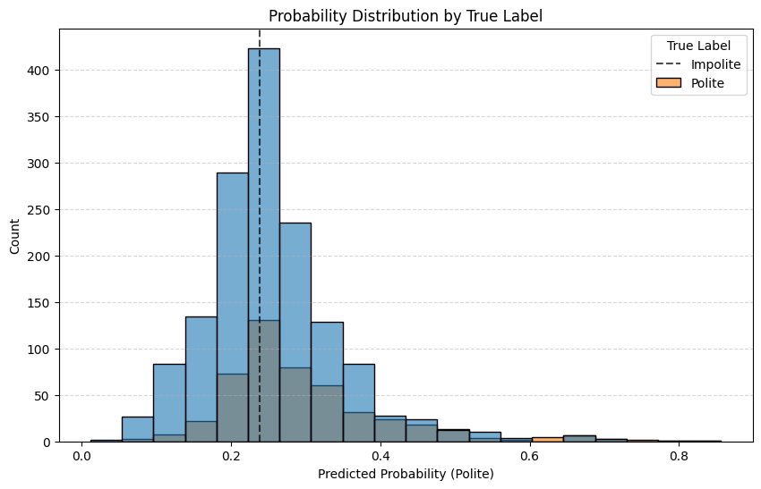

Model Training with iQual#
This notebook demonstrates advanced training techniques including cross-validation and hyperparameter optimization using the same politeness dataset from Getting Started.
1. Data Preparation#
import pandas as pd
import numpy as np
from sklearn.model_selection import train_test_split
from iqual import iqualnlp, evaluation, crossval
import matplotlib.pyplot as plt
import seaborn as sns
from convokit import Corpus, download
# Download the Stanford Politeness Corpus (same as in Getting Started)
print("Downloading the Stack Exchange Politeness Corpus...")
corpus = Corpus(filename=download("stack-exchange-politeness-corpus"))
print(f"Download complete. Corpus contains {len(corpus.get_utterance_ids())} utterances.")
# Process the corpus into a DataFrame (using the same code from Getting Started)
rows = []
for utt in corpus.iter_utterances():
request_text = utt.text
meta = utt.meta
if 'Binary' in meta:
binary_label = meta['Binary']
is_polite = 1 if binary_label == 1 else 0
if len(request_text.split('.')) > 1:
parts = request_text.split('.', 1)
context_text = parts[0] + '.'
request_text = parts[1].strip()
else:
context_text = "Stack Exchange discussion:"
rows.append({
'question': context_text,
'answer': request_text,
'is_polite': is_polite
})
# Convert to DataFrame
data = pd.DataFrame(rows)
data = data[data['question'].str.len() > 0]
data = data[data['answer'].str.len() > 0]
print(f"Created DataFrame with {len(data)} records")
print(f"Polite requests: {sum(data['is_polite'] == 1)}")
print(f"Impolite requests: {sum(data['is_polite'] == 0)}")
# Split the data into training and testing sets
train_data, test_data = train_test_split(data, test_size=0.3, random_state=42)
X_train = train_data[['question', 'answer']]
y_train = train_data['is_polite']
X_test = test_data[['question', 'answer']]
y_test = test_data['is_polite']
Downloading the Stack Exchange Politeness Corpus...
Dataset already exists at /Users/adityachhabra/.convokit/saved-corpora/stack-exchange-politeness-corpus
Download complete. Corpus contains 6603 utterances.
Created DataFrame with 6596 records
Polite requests: 1649
Impolite requests: 4947
2. Configuring a Parameter Grid for Cross-Validation#
question_col = 'question'
answer_col = 'answer'
# Define vectorizer options
# Option 1: Use scikit-learn vectorizers [https://scikit-learn.org/stable/api/sklearn.feature_extraction.html]
SKLEARN_QA_PARAMS = {
"Input": {
"question": {
"vectorizer": {
"model": ['TfidfVectorizer', 'CountVectorizer'],
"env": ['scikit-learn'],
'max_features': np.arange(1000, 6000, 1000),
'ngram_range': [(1, 1), (1, 2)]
}
},
"answer": {
"vectorizer": {
"model": ['TfidfVectorizer', 'CountVectorizer'],
"env": ['scikit-learn'],
'max_features': np.arange(1500, 6500, 1000),
'ngram_range': [(1, 1), (1, 2)]
}
}
}
}
# Option 2: Use only Answer text with scikit-learn vectorizers [https://www.sbert.net/docs/package_reference/sentence_transformer/SentenceTransformer.html]
SKLEARN_A_PARAMS = {
"Input": {
"question": ["drop"],
"answer": {
"vectorizer": {
"model": ['TfidfVectorizer', 'CountVectorizer'],
"env": ['scikit-learn'],
'max_features': np.arange(1500, 6500, 1000)
}
}
}
}
# Option 3: Use sentence transformers for both question and answer
SBERT_PARAMS = {
"Input": {
"question": {
"vectorizer": {
"model": ['distiluse-base-multilingual-cased-v2'],
"env": ['sentence-transformers']
}
},
"answer": {
"vectorizer": {
"model": ['distiluse-base-multilingual-cased-v2'],
"env": ['sentence-transformers']
}
}
}
}
# Define classifier options [https://scikit-learn.org/stable/api/sklearn.linear_model.html]
LOGISTIC_PARAMS = {
"Classifier": {
"model": ["LogisticRegression"],
"C": [0.001, 0.01, 0.1, 1, 10],
'penalty': ['l1', 'l2'],
'solver': ['saga']
}
}
# [https://scikit-learn.org/stable/api/sklearn.ensemble.html]
RANDOM_FOREST_PARAMS = {
"Classifier": {
"model": ["RandomForestClassifier"],
"n_estimators": [100, 200],
'max_depth': [5, 10, 20]
}
}
SVC_PARAMS = {
"Classifier": {
"model": ["SVC"],
"C": [0.01, 0.1, 1, 10],
'kernel': ['linear', 'rbf'],
'probability': [True]
}
}
# Combine vectorization and classifier parameters
VECTORIZATION_PARAMS = [SKLEARN_QA_PARAMS, SKLEARN_A_PARAMS, SBERT_PARAMS]
CLASSIFIER_PARAMS = [LOGISTIC_PARAMS, RANDOM_FOREST_PARAMS, SVC_PARAMS]
# Create all combinations of parameters
ALL_PARAM_COMBINATIONS = [{**vect_params, **clf_params} for vect_params in VECTORIZATION_PARAMS for clf_params in CLASSIFIER_PARAMS]
# Convert the nested parameter dictionary to the format expected by scikit-learn
CV_SEARCH_PARAMS = [crossval.convert_nested_params(p) for p in ALL_PARAM_COMBINATIONS]
print(f"Number of hyperparameter configurations: {crossval.count_hyperparameters(CV_SEARCH_PARAMS)}")
Number of hyperparameter configurations: 456
3. Instantiate an iQual model#
# Create a model
hp_model = iqualnlp.Model()
hp_model.add_text_features(question_col, answer_col)
hp_model.add_classifier()
hp_model.add_threshold(scoring_metric='f1')
hp_model.compile()
Pipeline(steps=[('Input',
FeatureUnion(transformer_list=[('question',
Pipeline(steps=[('selector',
FunctionTransformer(func=<function column_selector at 0x11d109c60>,
kw_args={'column_name': 'question'})),
('vectorizer',
Vectorizer(analyzer='word',
binary=False,
decode_error='strict',
dtype=<class 'numpy.float64'>,
encoding='utf-8',
env='scikit-learn',
input='conte...
tokenizer=None,
use_idf=True,
vocabulary=None))]))])),
('Classifier',
Classifier(C=1.0, class_weight=None, dual=False,
fit_intercept=True, intercept_scaling=1,
l1_ratio=None, max_iter=100,
model='LogisticRegression',
multi_class='deprecated', n_jobs=None, penalty='l2',
random_state=None, solver='lbfgs', tol=0.0001,
verbose=0, warm_start=False)),
('Threshold', BinaryThresholder())])In a Jupyter environment, please rerun this cell to show the HTML representation or trust the notebook. On GitHub, the HTML representation is unable to render, please try loading this page with nbviewer.org.
Pipeline(steps=[('Input',
FeatureUnion(transformer_list=[('question',
Pipeline(steps=[('selector',
FunctionTransformer(func=<function column_selector at 0x11d109c60>,
kw_args={'column_name': 'question'})),
('vectorizer',
Vectorizer(analyzer='word',
binary=False,
decode_error='strict',
dtype=<class 'numpy.float64'>,
encoding='utf-8',
env='scikit-learn',
input='conte...
tokenizer=None,
use_idf=True,
vocabulary=None))]))])),
('Classifier',
Classifier(C=1.0, class_weight=None, dual=False,
fit_intercept=True, intercept_scaling=1,
l1_ratio=None, max_iter=100,
model='LogisticRegression',
multi_class='deprecated', n_jobs=None, penalty='l2',
random_state=None, solver='lbfgs', tol=0.0001,
verbose=0, warm_start=False)),
('Threshold', BinaryThresholder())])FeatureUnion(transformer_list=[('question',
Pipeline(steps=[('selector',
FunctionTransformer(func=<function column_selector at 0x11d109c60>,
kw_args={'column_name': 'question'})),
('vectorizer',
Vectorizer(analyzer='word',
binary=False,
decode_error='strict',
dtype=<class 'numpy.float64'>,
encoding='utf-8',
env='scikit-learn',
input='content',
lowercase=True,
max_df...
dtype=<class 'numpy.float64'>,
encoding='utf-8',
env='scikit-learn',
input='content',
lowercase=True,
max_df=1.0,
max_features=None,
min_df=1,
model='TfidfVectorizer',
ngram_range=(1, 1),
norm='l2',
preprocessor=None,
smooth_idf=True,
stop_words=None,
strip_accents=None,
sublinear_tf=False,
token_pattern='(?u)\\b\\w\\w+\\b',
tokenizer=None,
use_idf=True,
vocabulary=None))]))])FunctionTransformer(func=<function column_selector at 0x11d109c60>,
kw_args={'column_name': 'question'})Vectorizer(analyzer='word', binary=False, decode_error='strict',
dtype=<class 'numpy.float64'>, encoding='utf-8', env='scikit-learn',
input='content', lowercase=True, max_df=1.0, max_features=None,
min_df=1, model='TfidfVectorizer', ngram_range=(1, 1), norm='l2',
preprocessor=None, smooth_idf=True, stop_words=None,
strip_accents=None, sublinear_tf=False,
token_pattern='(?u)\\b\\w\\w+\\b', tokenizer=None, use_idf=True,
vocabulary=None)FunctionTransformer(func=<function column_selector at 0x11d109c60>,
kw_args={'column_name': 'answer'})Vectorizer(analyzer='word', binary=False, decode_error='strict',
dtype=<class 'numpy.float64'>, encoding='utf-8', env='scikit-learn',
input='content', lowercase=True, max_df=1.0, max_features=None,
min_df=1, model='TfidfVectorizer', ngram_range=(1, 1), norm='l2',
preprocessor=None, smooth_idf=True, stop_words=None,
strip_accents=None, sublinear_tf=False,
token_pattern='(?u)\\b\\w\\w+\\b', tokenizer=None, use_idf=True,
vocabulary=None)Classifier(C=1.0, class_weight=None, dual=False, fit_intercept=True,
intercept_scaling=1, l1_ratio=None, max_iter=100,
model='LogisticRegression', multi_class='deprecated', n_jobs=None,
penalty='l2', random_state=None, solver='lbfgs', tol=0.0001,
verbose=0, warm_start=False)BinaryThresholder()
## Define scoring metrics
scoring_dict = evaluation.get_scoring_dict(['accuracy', 'precision', 'recall', 'f1'])
scoring_dict
{'accuracy': make_scorer(accuracy_score, response_method='predict'),
'precision': make_scorer(precision_score, response_method='predict', average=binary),
'recall': make_scorer(recall_score, response_method='predict', average=binary),
'f1': make_scorer(f1_score, response_method='predict', average=binary)}
4. Run cross-validation with hyperparameter search#
## Create a standard KFold splitter
from sklearn.model_selection import KFold
n_splits = 3
kfold = KFold(n_splits=n_splits, shuffle=True, random_state=42)
print("Running cross-validation with hyperparameter search...")
cv_dict = hp_model.cross_validate_fit(
X_train,
y_train,
search_parameters=CV_SEARCH_PARAMS,
cv_method='RandomizedSearchCV', # Options: 'GridSearchCV', 'RandomizedSearchCV'
n_iter=10,
# NOTE: Using `RandomizedSearchCV` and 10 iterations for demonstration purposes.
scoring=scoring_dict, # Dictionary of scoring metrics
refit='f1', # Metric to use for selecting the best model
n_jobs=8, # Use all available processors
cv_splits=kfold, # Number of cross-validation folds
)
Running cross-validation with hyperparameter search...
.......456 hyperparameters configurations possible.....
/Users/adityachhabra/squizzyenv/lib/python3.11/site-packages/sklearn/linear_model/_sag.py:349: ConvergenceWarning: The max_iter was reached which means the coef_ did not converge
warnings.warn(
/Users/adityachhabra/squizzyenv/lib/python3.11/site-packages/sklearn/linear_model/_sag.py:349: ConvergenceWarning: The max_iter was reached which means the coef_ did not converge
warnings.warn(
/Users/adityachhabra/squizzyenv/lib/python3.11/site-packages/sklearn/linear_model/_sag.py:349: ConvergenceWarning: The max_iter was reached which means the coef_ did not converge
warnings.warn(
/Users/adityachhabra/squizzyenv/lib/python3.11/site-packages/sklearn/linear_model/_sag.py:349: ConvergenceWarning: The max_iter was reached which means the coef_ did not converge
warnings.warn(
/Users/adityachhabra/squizzyenv/lib/python3.11/site-packages/sklearn/linear_model/_sag.py:349: ConvergenceWarning: The max_iter was reached which means the coef_ did not converge
warnings.warn(
/Users/adityachhabra/squizzyenv/lib/python3.11/site-packages/sklearn/linear_model/_sag.py:349: ConvergenceWarning: The max_iter was reached which means the coef_ did not converge
warnings.warn(
# Display cross-validation results of best score
print(f"Average test score across folds: {cv_dict['avg_test_score']:.3f}")
Average test score across folds: 0.414
5. Analyzing the Best Model Parameters#
# Get the best parameters from cross-validation
best_params_df = pd.DataFrame([hp_model.cv.get_best_params()])
# Extract and display the most important parameters
selected_params = {}
for param, value in best_params.items():
if 'model' in param or 'max_features' in param or 'C' in param or 'n_estimators' in param:
selected_params[param] = value
selected_params['decision_threshold'] = hp_model.get_params()['steps'][-1][-1].threshold
print("Best Model Configuration:")
for param, value in selected_params.items():
print(f" {param}: {value}")
Best Model Configuration:
Input__question__vectorizer__model: TfidfVectorizer
Input__answer__vectorizer__model: TfidfVectorizer
Classifier__solver: saga
Classifier__penalty: l1
Classifier__model: LogisticRegression
Classifier__C: 1
decision_threshold: 0.19955704558360515
6. Fold-by-Fold Cross-Validation Predictions with Best Parameters#
# Initialize arrays to store CV predictions
cv_train_pred = np.zeros(len(X_train))
cv_train_proba = np.zeros(len(X_train))
# Get CV splits
cv_splits = list(kfold.split(X_train))
# For each fold
for fold_idx, (train_idx, val_idx) in enumerate(cv_splits):
print(f"Processing fold {fold_idx + 1}/{n_splits}")
# Get fold training and validation data
X_fold_train = X_train.iloc[train_idx]
y_fold_train = y_train.iloc[train_idx]
X_fold_val = X_train.iloc[val_idx]
# Create and train model with best parameters
fold_model = iqualnlp.Model()
fold_model.add_text_features(question_col, answer_col)
fold_model.add_classifier()
fold_model.add_threshold(scoring_metric='f1') # Same as refit parameter
fold_model.compile()
# Set best parameters and fit
fold_model.set_params(**best_params)
fold_model.fit(X_fold_train, y_fold_train)
# Predict on validation fold
cv_train_pred[val_idx] = fold_model.predict(X_fold_val)
cv_train_proba[val_idx] = fold_model.predict_proba(X_fold_val)
Processing fold 1/3
Processing fold 2/3
/Users/adityachhabra/squizzyenv/lib/python3.11/site-packages/sklearn/linear_model/_sag.py:349: ConvergenceWarning: The max_iter was reached which means the coef_ did not converge
warnings.warn(
Processing fold 3/3
/Users/adityachhabra/squizzyenv/lib/python3.11/site-packages/sklearn/linear_model/_sag.py:349: ConvergenceWarning: The max_iter was reached which means the coef_ did not converge
warnings.warn(
7. Evaluate Fold-by-Fold Predictions#
from sklearn.metrics import (
classification_report,
confusion_matrix,
accuracy_score,
precision_score,
recall_score,
f1_score
)
# Calculate metrics on fold-by-fold predictions
fold_metrics = {
'Accuracy': accuracy_score(y_train, cv_train_pred),
'Precision': precision_score(y_train, cv_train_pred),
'Recall': recall_score(y_train, cv_train_pred),
'F1 Score': f1_score(y_train, cv_train_pred)
}
print("Fold-by-Fold Cross-Validation Performance Metrics:")
for metric, value in fold_metrics.items():
print(f" {metric}: {value:.4f}")
print("\nDetailed Classification Report:")
print(classification_report(y_train, cv_train_pred))
# Create confusion matrix
cm = confusion_matrix(y_train, cv_train_pred)
plt.figure(figsize=(8, 6))
sns.heatmap(cm, annot=True, fmt='d', cmap='Blues',
xticklabels=['Impolite', 'Polite'],
yticklabels=['Impolite', 'Polite'])
plt.xlabel('Predicted')
plt.ylabel('Actual')
plt.title('Confusion Matrix (Fold-by-Fold CV)')
plt.show()
Fold-by-Fold Cross-Validation Performance Metrics:
Accuracy: 0.5229
Precision: 0.2918
Recall: 0.6254
F1 Score: 0.3979
Detailed Classification Report:
precision recall f1-score support
0 0.79 0.49 0.60 3453
1 0.29 0.63 0.40 1164
accuracy 0.52 4617
macro avg 0.54 0.56 0.50 4617
weighted avg 0.67 0.52 0.55 4617
8. Train Final Model and Evaluate on Test Set#
# Train final model on all training data
final_model = iqualnlp.Model()
final_model.add_text_features(question_col, answer_col)
final_model.add_classifier()
final_model.add_threshold(scoring_metric='f1')
final_model.compile()
final_model.set_params(**best_params)
final_model.fit(X_train, y_train)
# Predict on test set
test_pred = final_model.predict(X_test)
test_proba = final_model.predict_proba(X_test)
# Calculate metrics
test_metrics = {
'Accuracy': accuracy_score(y_test, test_pred),
'Precision': precision_score(y_test, test_pred),
'Recall': recall_score(y_test, test_pred),
'F1 Score': f1_score(y_test, test_pred)
}
print("Test Set Performance Metrics:")
for metric, value in test_metrics.items():
print(f" {metric}: {value:.4f}")
print("\nDetailed Classification Report:")
print(classification_report(y_test, test_pred))
# Create confusion matrix for test predictions
cm_test = confusion_matrix(y_test, test_pred)
plt.figure(figsize=(8, 6))
sns.heatmap(cm_test, annot=True, fmt='d', cmap='Blues',
xticklabels=['Impolite', 'Polite'],
yticklabels=['Impolite', 'Polite'])
plt.xlabel('Predicted')
plt.ylabel('Actual')
plt.title('Confusion Matrix (Test Set)')
plt.show()
/Users/adityachhabra/squizzyenv/lib/python3.11/site-packages/sklearn/linear_model/_sag.py:349: ConvergenceWarning: The max_iter was reached which means the coef_ did not converge
warnings.warn(
Test Set Performance Metrics:
Accuracy: 0.5296
Precision: 0.2987
Recall: 0.6825
F1 Score: 0.4156
Detailed Classification Report:
precision recall f1-score support
0 0.82 0.48 0.61 1494
1 0.30 0.68 0.42 485
accuracy 0.53 1979
macro avg 0.56 0.58 0.51 1979
weighted avg 0.69 0.53 0.56 1979
Compare CV Performance vs Test Performance#
# Create a DataFrame to compare CV and test metrics
comparison_df = pd.DataFrame({
'Metric': list(fold_metrics.keys()),
'Cross-Validation': list(fold_metrics.values()),
'Test Set': list(test_metrics.values())
})
print(comparison_df)
# Plot comparison
plt.figure(figsize=(10, 6))
comparison_df.set_index('Metric').plot(kind='bar', rot=0)
plt.ylabel('Score')
plt.title('Cross-Validation vs Test Performance')
plt.ylim(0, 1)
plt.grid(axis='y', linestyle='--', alpha=0.7)
plt.show()
Metric Cross-Validation Test Set
0 Accuracy 0.522850 0.529560
1 Precision 0.291784 0.298736
2 Recall 0.625430 0.682474
3 F1 Score 0.397923 0.415568
<Figure size 1000x600 with 0 Axes>
Examine Predictions#
# Create a DataFrame with test examples and their predictions
results_df = pd.DataFrame({
'Question': X_test['question'],
'Answer': X_test['answer'],
'True Label': y_test,
'Predicted Label': test_pred,
'Probability': test_proba
})
# Calculate prediction error (0 = correct, 1 = incorrect)
results_df['Error'] = (results_df['True Label'] != results_df['Predicted Label']).astype(int)
Examples of Correct Predictions (Polite):#
results_df[(results_df['True Label'] == 1) & (results_df['Error'] == 0)].head(3)[['Question', 'Answer', 'Probability']]
| Question | Answer | Probability | |
|---|---|---|---|
| 96 | This looks right, and works for me. | What do you see? | 0.334304 |
| 6545 | Thanks. | BTW, should I mince the parsley before frying it? | 0.641810 |
| 4415 | @damonokz Sorry maybe I misunderstood somethin... | So the guys here who are trying to answer your... | 0.246023 |
Examples of Correct Predictions (Impolite):#
results_df[(results_df['True Label'] == 0) & (results_df['Error'] == 0)].head(3)[['Question', 'Answer', 'Probability']]
| Question | Answer | Probability | |
|---|---|---|---|
| 3169 | Stack Exchange discussion: | So you're trying to use remote debugging? Have... | 0.225389 |
| 395 | Stack Exchange discussion: | Why would you need to parse the HTML that you ... | 0.174796 |
| 2205 | Stack Exchange discussion: | "Not a real question" ? What is the "not real"... | 0.189892 |
Examples of Incorrect Predictions (False Negatives)#
results_df[(results_df['True Label'] == 1) & (results_df['Error'] == 1)].head(3)[['Question', 'Answer', 'Probability']]
| Question | Answer | Probability | |
|---|---|---|---|
| 474 | You may want to define efficient/clean. | Do you mean simplest in terms of expression, o... | 0.199029 |
| 3524 | Stack Exchange discussion: | How exactly have you set its height? Have you... | 0.227073 |
| 2417 | Stack Exchange discussion: | What environment are you developing under? OS ... | 0.204043 |
Examples of Incorrect Predictions (False Positives):#
results_df[(results_df['True Label'] == 0) & (results_df['Error'] == 1)].head(3)[['Question', 'Answer', 'Probability']]
| Question | Answer | Probability | |
|---|---|---|---|
| 5122 | you have not provider the 11,21,31 code for th... | Can you provide dxf file so I can get a better... | 0.695675 |
| 2529 | During transcoding, were the audio files upsam... | g. converting 8-bit 11kHz to 16-bit 44kHz? | 0.244150 |
| 683 | Stack Exchange discussion: | Are you trying to create an advert that plays ... | 0.286604 |
Probability distributions by true label#
decision_threshold_final = final_model.get_params()['steps'][-1][-1].threshold
plt.figure(figsize=(10, 6))
sns.histplot(data=results_df, x='Probability', hue='True Label', bins=20, alpha=0.6)
plt.axvline(x=decision_threshold_final, color='black', linestyle='--', alpha=0.7, label='Decision Boundary')
plt.title('Probability Distribution by True Label')
plt.xlabel('Predicted Probability (Polite)')
plt.ylabel('Count')
plt.legend(title='True Label', labels=['Impolite', 'Polite'])
plt.grid(axis='y', linestyle='--', alpha=0.5)
plt.show()

Summary#
print(f"Best model parameters were selected from {crossval.count_hyperparameters(CV_SEARCH_PARAMS)} hyperparameter combinations")
print(f"Best model F1 score in cross-validation: {cv_dict['avg_test_score']:.4f}")
print(f"Final model F1 score on test set: {test_metrics['F1 Score']:.4f}")
# Extract the key components of the best model
best_vectorizers = []
for param, value in best_params.items():
if 'vectorizer__model' in param and isinstance(value, str):
component = param.split('__')[1] # question or answer
best_vectorizers.append(f"{component}: {value}")
best_classifier = best_params.get('Classifier__model', 'Unknown')
print("\n" + '-'*50)
print("\nBest Model Configuration:")
print("\n" + '-'*50 + '\n')
print(f"Vectorizer(s): {', '.join(best_vectorizers)}")
print(f"Classifier: {best_classifier}")
print(f"Decision Boundary: {decision_threshold_final:.2f}")
Best model parameters were selected from 456 hyperparameter combinations
Best model F1 score in cross-validation: 0.4136
Final model F1 score on test set: 0.4156
--------------------------------------------------
Best Model Configuration:
--------------------------------------------------
Vectorizer(s): question: TfidfVectorizer, answer: TfidfVectorizer
Classifier: LogisticRegression
Decision Boundary: 0.24